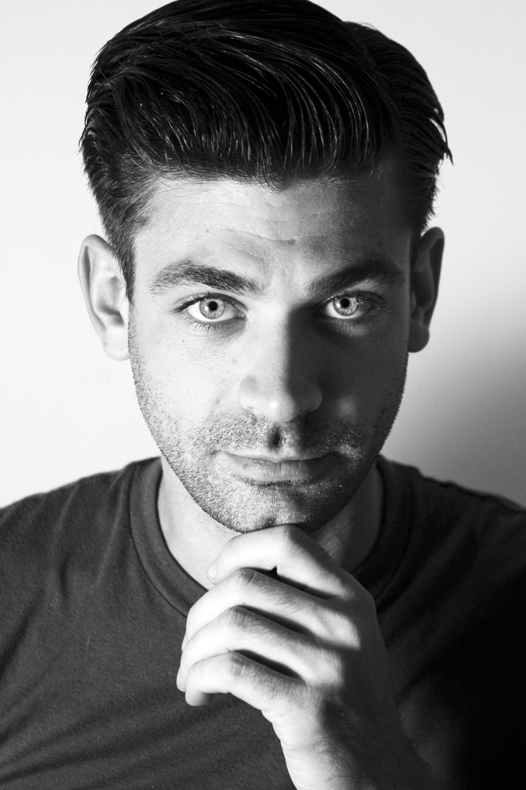

FRONT-END DEVELOPER
Hi there.
I'm Adam Davis, and I am a huge nerd and Internet veteran. We got our first "computer" in 1986 - a TI-99/4A, and I used to spend hours inputting BASIC into it from program books to create simple games. My first taste of the internet was in 1994 when we got a 486 computer and I daialed into a local BBS on a 2400 baud modem. Around 1998, I started playing with HTML and building websites for fun, then in 2005-2010 I built and maintained three WordPress-based sites for a morning talk radio host whom I worked for as an editor, producer and general tech guy. These sites included e-commerce, mailing lists, ticketing, user accounts and password protected sections, and podcasts.
Always interested in experimenting with microphones, speakers, and recording, I inadvertenty fell deep into the live event buisines. What started as running sound for bands on the weekend for fun and extra money eventually turned into a crazy lifestyle with long, late hours and no semblance of a normal schedule.
I am now leaving the event world and moving into development. In my mind, mind, web programming and audio are very closely related - it's all about getting the signal flow right and troubleshooting when it doesn't work. Finding creative solutions to problems is one of my favorite things to do.